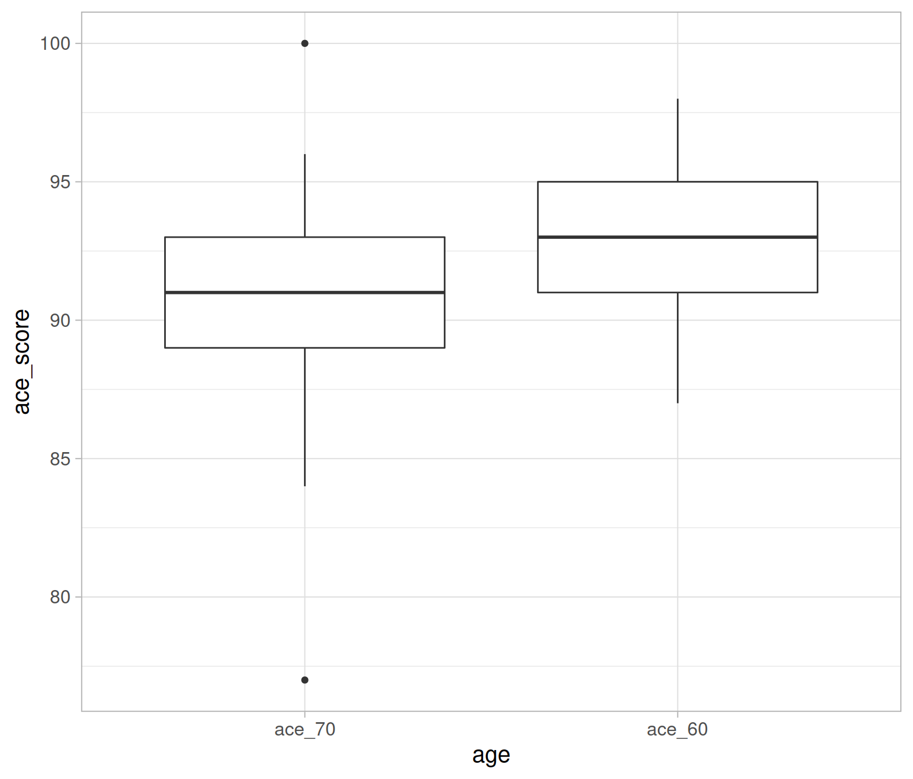

One of the assumptions of the t-test is that the data are independently sampled. Sometimes this assumptions does not hold. A clear example is the case of paired data. These may consist of two measurements on each unit, such as the same unit being measured under two different conditions, or measurements on a pair of units that go together, such as twin studies.
The paired sample t-test (also known as the “dependent samples t-test”) is used in scenarios such as:
Same units observed on two occasions: A measurement is taken on the same subject before and after some treatment, or at two different timepoints - e.g. response times to a task before and after ingesting a caffeine drink.
Same units observed on a pair of variables: A measurement is taken under two different conditions - e.g. response time of the same subject is measured on two different drugs.
Pairs of people: A measurement is taken of the same variable but from different people from a dyad (pair of people) - e.g. do store employees work different amount of hours to their bosses?
In all these scenarios, we are interested in comparing the measurements between two groups in which each observation in one group can be paired with an observation in the other group.
The following table gives an example where 10 subjects have their heartbeats per minute measured in two occasions, in the morning (\(HB_M\)) and in the afternoon (\(HB_A\)) . \[ \begin{matrix} \text{Subject} & HB_M & HB_A \\ 1 & 71 & 83 \\ 2 & 64 & 78 \\ \vdots & \vdots & \vdots \\ 10 & 85 & 97 \end{matrix} \]
Clearly the data aren’t independent. Some people might typically have higher heartbeats than others, and for this reason the data corresponding to the same subject are dependent. However, the data between different people should be independent.
We can get rid of the by-subject dependence by computing, for each subject, the difference!
\[ \begin{matrix} \text{Subject} & HB_M & HB_A & d = HB_A - HB_M \\ 1 & 71 & 83 & 12 \\ 2 & 64 & 78 & 14 \\ \vdots & \vdots & \vdots & \vdots \\ 10 & 85 & 97 & 12 \end{matrix} \]
and we are interested in whether the difference is, on average, equal to some hypothesised value, such as 0 for example. If this were the case, on average the heartbeats in the morning would be the same as the heartbeats in the afternoon.
Null hypothesis
A paired sample t-test has a familiar null hypothesis:
\[H_0: \mu_d = 0\]
i.e. the population mean difference is 0.
Alternative hypotheses
The alternative hypotheses can be two-sided, or one-sided (left-tailed or right-tailed).
But what does that mean that the population mean difference is smaller (larger) than 0? It means that the measurements in group 1 are, on average, smaller (larger) than group 2.
Test statistic
\[ t_{obs} = \frac{\bar{d}}{SE}, \qquad \text{where } SE = \frac{s_d}{\sqrt{n}} \]
in the formula above:
Confidence interval
A 95% confidence interval for the population mean difference \(\mu_d\) is:
\[ \bar{d} \pm t_{0.975} \cdot SE \] where
Note: For a 99% confidence interval, remember to change the quantile to \(t_{0.995}\)!
For the results of a paired t-test to be valid, the following assumptions should be met:
Checking assumptions
indentify_outliers() function in the {rstatix} package can extract rows suspected as outliers.The paired-sample t-test is very similar to the one sample t-test covered in Week 7.
The steps for the one sample t-test are:
The steps for the paired t-test are:
The formula for the t-statistic, assessing statistical significance, and constructing confidence intervals is identical to the one-sample t-test.
We have just changed the notation - instead of talking about a population mean \(\mu\) of a variable \(x\), which is estimated by a sample mean (\(\bar{x}\)), we are talking about a population mean of differences (\(\mu_d\)) which is estimated by the sample mean of the differences (\(\bar{d}\)). We are testing whether the population mean difference (\(\mu_d\)) is different from 0.
Addenbrooke’s Cognitive Examination-III (ACE-III) is a brief cognitive test that assesses five cognitive domains: attention, memory, verbal fluency, language and visuospatial abilities. The total score is 100 with higher scores indicating better cognitive functioning. A research project is examining changes in cognitive functioning with age, and administers the ACE-III to a set of participants at age 60, then again at age 70.
How is the data from this study paired?
The same people have the same variable (ACE-III score) measured at different time points (age 60 then age 70).
Now, we write the null and alternative hypothesis:
As the research project is examining ‘changes’ without specifying which direction, we can write a null hypothesis and a two-sided alternative hypothesis.
Our null hypothesis is that the population means in scores on the ACE-III between ages 60 and 70 are the same (i.e. no change/the difference in means is = 0).
Our alternative hypothesis is that the population means in scores on the ACE-III between ages 60 and 70 is not equal (i.e. scores at age 70 are different from scores at age 60).
By taking the difference in the cognitive scores at age 70 and 60, we can assess this by testing whether
\[ H_0: \mu_d = 0 \\ H_1: \mu_d \neq 0 \]
Next, we read in the data and make a new column of the difference in scores for each pair.
acedata <- read_csv("https://uoepsy.github.io/data/acedata.csv")
acedata <- acedata %>%
mutate(diff_score = ace_70 - ace_60)
head(acedata) # look at the "head" of the data frame ## # A tibble: 6 x 4
## participant ace_60 ace_70 diff_score
## <chr> <dbl> <dbl> <dbl>
## 1 sub1 93 85 -8
## 2 sub2 95 92 -3
## 3 sub3 93 90 -3
## 4 sub4 93 95 2
## 5 sub5 96 88 -8
## 6 sub6 91 85 -6To assess if there is a significant difference in ACE-III scores for particpants at ages 60 and 70, we must calculate the mean difference (\(\bar{d}\)), our sample standard deviation (\(s_d\)) and our sample size (\(n\)).
aceterms <- acedata %>%
summarise(
dbar = mean(diff_score),
s_d = sd(diff_score),
n = n()
)
aceterms## # A tibble: 1 x 3
## dbar s_d n
## <dbl> <dbl> <int>
## 1 -2.48 5.50 25Let’s recall the formula for the observed t-statistic: \[ t_{obs} = \frac{\bar d}{SE}, \qquad \text{where }SE = \frac{s_d}{\sqrt n} \]
In R:
SE <- aceterms$s_d / sqrt(aceterms$n)
t_stat <- (aceterms$dbar - 0) / SE
t_stat## [1] -2.254173The t-statistic is negative, so we can make it positive via abs(t_stat) and then compute it as twice the proportion as larger as, or larger than, abs(t_stat):
2 * (1 - pt(abs(t_stat), df = 24))## [1] 0.03358854Equivalently, you could have computed it as twice the proportion in the lower tail:
2 * pt(t_stat, df = 24)## [1] 0.03358854# mean difference between measurements
aceterms$dbar## [1] -2.48# standard error
SE <- aceterms$s_d / sqrt(aceterms$n)
SE## [1] 1.100182# upper critical value of a t-distribution (alpha = 0.05) with df = 24
upper_crit <- qt(.975, df = 24)
upper_crit## [1] 2.063899# lower interval limit
ci_lower <- aceterms$dbar - upper_crit * SE
# upper interval limit
ci_upper <- aceterms$dbar + upper_crit * SE
# display the interval
c(ci_lower, ci_upper)## [1] -4.7506636 -0.2093364What does all this mean?
At the 5% significance level, we performed a paired sample t-test to determine whether cognitive functioning1 differs, on average, between the ages of 60 and 70 (\(t(24) = -2.25, p = .034\), two-tailed).
The mean difference in ACE-III scores for ages 70 and 60 is -2.48 (95% CI [-4.75, -0.21]). The small p-value (0.034) indicates that if the difference in cognitive scores was, on average, truly equal zero, we would expect to observe a sample difference as large as -2.48 only in 3 samples out of 100. Hence, the sample data provide strong evidence against the null hypothesis and in favour of the alternative that the difference is cognitive scores is on average different from zero.
However, the result of the t-test doesn’t help us interpret whether cognitive scores are higher at 60 or 70 years. To understand that, we interpret the confidence interval paying particular attention to whether it is entirely positive or negative.
A 95% confidence interval for the difference in cognitive scores at 70 and 60 years is [ -4.75 -0.21]. We are 95% confidence that at 70 years the cognitive score is, on average, between 0.21 and 4.75 less than at 60 years.
t.test(acedata$ace_70, acedata$ace_60, paired = TRUE) # remember the default setting is two-sided##
## Paired t-test
##
## data: acedata$ace_70 and acedata$ace_60
## t = -2.2542, df = 24, p-value = 0.03359
## alternative hypothesis: true difference in means is not equal to 0
## 95 percent confidence interval:
## -4.7506636 -0.2093364
## sample estimates:
## mean of the differences
## -2.48Looks like all the values match up!
Visualising the data is always useful! Here, a boxplot is a good option as we can visualise the difference in means across the two time points.
ggplot(data = acedata_long, aes(x = age, y = ace_score)) +
geom_boxplot()
Note that we’re using the long data format here (see the optional box above if you skipped it!). We’re telling the ggplot function to put age on the x-axis and ace_score on the y axis. As age (x-axis) has two levels, it allows us to view the distributions of the ace_60 and ace_70 scores side-by-side.
Cohen’s \(D\) is an effect size used to indicate the standardised difference between two means. For an interactive tool which allows you to change effect sizes, check out this link: https://rpsychologist.com/cohend/.
The formula for Cohen’s \(D\) are as follow for the different types of t-tests we’ve looked at:
| Test | Cohen’s \(D\) |
|---|---|
| One-sample t-test | \(D = \frac{\bar{x} - 0}{s_x}\) |
| Independent samples t-test | \(D = \frac{(\bar{x}_1-\bar{x}_2) - 0}{s_p}\) |
| Paired t-test | \(D = \frac{\bar{d} - 0}{s_d}\) |
Interpreting Cohen’s \(D\):
Check out the link above with the interactive tool. Change the Cohen’s \(D\) to 0.2, 0.5 and 0.8 to compare the standardised differences between the two groups!
In practice, we already have the figures we need, stored in aceterms:
aceterms## # A tibble: 1 x 3
## dbar s_d n
## <dbl> <dbl> <int>
## 1 -2.48 5.50 25(aceterms$dbar - 0) / (aceterms$s_d)## [1] -0.4508346Look like we have a small-to-medium effect size.
Is there an age difference in heterosexual married couples (and in which direction)?
Data is available at: https://uoepsy.github.io/data/marriageages.csv
First, we must read in our data. Then, create a new column which is the husband’s age minus the wife’s age (i.e. the difference).
As we are testing the differences, what assumptions are we making? And, what assumption checks can we do? (Remember, this is a one-sample t-test in disguise!)
If we’re about to conduct a t-test on the difference scores, what will the results mean?
If we get a positive t-statistic \((t_{obs} > 0)\), what direction is the difference? I.e. who is older? The husbands or the wives?
Conduct a one-sample t-test, testing that the age differences are not equal to 0.
If you’re confused about one-sample t-tests, look back at Week 7’s lab!
Now, run a t-test using the paired = TRUE argument of the t.test() function. Remember, as we have a column for husbands and a column for wives.
Compare the output with the output performed above - are they the same?
Calculate Cohen’s \(D\)
Write a brief summary of the findings, using inline code (include mean ages, t-test output and Cohen’s \(D\)).
A researcher has developed a cognitive behavioural therapy (CBT) based on a smartphone app, and is testing how effective it is in helping people to stop smoking.
The researcher recruited 60 participants who were trying to stop smoking. Over the course of a week, the researcher recorded the average number of cigarettes smoked per day, per participant. Thirty participants were given the app, and were asked every time they felt like smoking to open the app on and complete a five-minute task. All 60 participants were followed up a month later. The average number of cigarettes smoked per day (over a week) was recorded.
The data is available at: https://uoepsy.github.io/data/cbtsmoke.csv
Read the data into R.
What was the average number of cigarettes smoked per day at both time-points for each group?
At the point of recruitment, did the 60 participants smoke more of less than 20 cigarettes per day?
This is asking whether the mean number of cigarettes per day is different to 20. Thus, we are asking whether a mean is different from a hypothesised number i.e. a one-sample t-test!
P.S. Don’t forget to check your assumptions!
Did the average number of cigarettes smoked per day differ between the groups at the initial recruitment?
These observations (from the different groups) are independent, so we are going to perform an independent samples t-test.
And don’t forget, check your assumptions! (Look back to last weeks lab for independent sample t-tests if you’re stuck)
Did the group given the app change their smoking habits from the intial time point to the one-month follow up? If so, was there a big change?
Here, we need to focus on the data from those who were given the app. The second question is asking about effect size.
as measured using the total scores on the ACE-III.↩︎